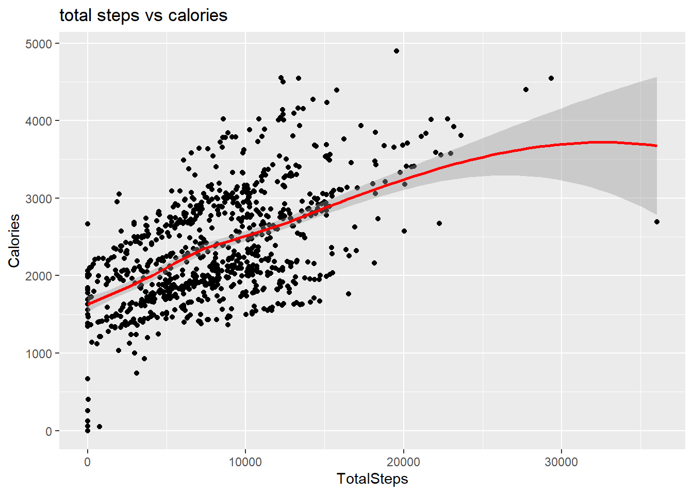

Bellatbeat, a high-tech company that manufactres health-focused smart products for women. Bellabeat is a successful small company, but they have the potential to become a larger player in the global smart device market Urška Sršen, cofounder and Chief Creative Officer of Bellabeat, believes that analyzing smart device fitness data could help unlock new growth opportunities for the company.
what are some trends in smart device usage?
How could these trends apply to Bellabeat customers?
How could these trends help influence Bellabeat marketing strategy?
Stakeholders
Urška Sršen - Bellabeat cofounder and Chief Creative Officer
Sando Mur - Bellabeat cofounder and key member of Bellabeat executive team
Bellabeat Marketing Analytics team
about data
considering accessibility, amount of data and various visualization, I will use R to analyze the data
Installing Packages and Opening Libraries
library(tidyverse)
library(skimr)
library(janitor)
library(dplyr)
library(lubridate)importing Dataset daily activity, daily calories, hourly steps, daily intensities, daily sleep and weight info
activity <- read_csv("Fitabase Data 4.12.16-5.12.16/dailyActivity_merged.csv")
Calories <- read.csv("Fitabase Data 4.12.16-5.12.16/dailyCalories_merged.csv")
hourly_steps <- read.csv("Fitabase Data 4.12.16-5.12.16/hourlySteps_merged.csv")
intensities <- read.csv("Fitabase Data 4.12.16-5.12.16/dailyintensities_merged.csv")
sleep <- read.csv("Fitabase Data 4.12.16-5.12.16/sleepDay_merged.csv")
weight <- read.csv("Fitabase Data 4.12.16-5.12.16/weightLogInfo_merged.csv")checking sample size by participants ID
n_distinct(activity$Id)
n_distinct(Calories$Id)
n_distinct(sleep$Id)
n_distinct(weight$Id)
n_distinct(hourly_steps$Id)33
33
24
8
33
because the sample size of Weight data is too small for minimum of 30, I’ll exclude the dataset for later analyze. For the sleep data, i will still keep the dataset but low validity compare to other datasets.
checking data columns
colnames(activity)
colnames(intensities)
colnames(sleep)
colnames(hourly_steps)Changing Date format and dropping redundant columns
hourly_steps <- hourly_steps %>% separate(ActivityHour, c("Date", "Hour"), sep = ' ')
activity <- subset(activity, select= -c(SedentaryActiveDistance, LoggedActivitiesDistance))let’s have statistic summary tables
#summarizing data
#Activity
activity %>% select(TotalSteps, TotalDistance, VeryActiveMinutes, FairlyActiveMinutes, LightlyActiveMinutes, SedentaryMinutes, Calories, ActivityDate) %>% drop_na() %>% summary()## TotalSteps TotalDistance VeryActiveMinutes FairlyActiveMinutes
## Min. : 0 Min. : 0.000 Min. : 0.00 Min. : 0.00
## 1st Qu.: 3790 1st Qu.: 2.620 1st Qu.: 0.00 1st Qu.: 0.00
## Median : 7406 Median : 5.245 Median : 4.00 Median : 6.00
## Mean : 7638 Mean : 5.490 Mean : 21.16 Mean : 13.56
## 3rd Qu.:10727 3rd Qu.: 7.713 3rd Qu.: 32.00 3rd Qu.: 19.00
## Max. :36019 Max. :28.030 Max. :210.00 Max. :143.00
## LightlyActiveMinutes SedentaryMinutes Calories ActivityDate
## Min. : 0.0 Min. : 0.0 Min. : 0 Length:940
## 1st Qu.:127.0 1st Qu.: 729.8 1st Qu.:1828 Class :character
## Median :199.0 Median :1057.5 Median :2134 Mode :character
## Mean :192.8 Mean : 991.2 Mean :2304
## 3rd Qu.:264.0 3rd Qu.:1229.5 3rd Qu.:2793
## Max. :518.0 Max. :1440.0 Max. :4900#Calories
Calories %>% select(Calories) %>% drop_na() %>% summary()## Calories
## Min. : 0
## 1st Qu.:1828
## Median :2134
## Mean :2304
## 3rd Qu.:2793
## Max. :4900#Sleep
sleep %>% select(TotalSleepRecords, TotalMinutesAsleep, TotalTimeInBed) %>% drop_na() %>% summary()## TotalSleepRecords TotalMinutesAsleep TotalTimeInBed
## Min. :1.000 Min. : 58.0 Min. : 61.0
## 1st Qu.:1.000 1st Qu.:361.0 1st Qu.:403.0
## Median :1.000 Median :433.0 Median :463.0
## Mean :1.119 Mean :419.5 Mean :458.6
## 3rd Qu.:1.000 3rd Qu.:490.0 3rd Qu.:526.0
## Max. :3.000 Max. :796.0 Max. :961.0Create some new data frames before get in to Analyze
#on average, during which hour of the day were the most steps taken?
hourly_steps %>% group_by(Hour) %>% summarize(mean_steps = mean(StepTotal)) %>% select(Hour, mean_steps) %>% arrange(desc(mean_steps)) %>% head(5)## # A tibble: 5 × 2
## Hour mean_steps
## <chr> <dbl>
## 1 7:00:00 443.
## 2 8:00:00 391.
## 3 6:00:00 386.
## 4 9:00:00 372.
## 5 10:00:00 361.mean_steps <- hourly_steps %>% group_by(Hour) %>% summarize(mean_steps = mean(StepTotal)) %>% select(Hour, mean_steps) %>% arrange(desc(mean_steps)) %>% as.data.frame
head(mean_steps)## Hour mean_steps
## 1 7:00:00 442.8329
## 2 8:00:00 391.2259
## 3 6:00:00 385.9766
## 4 9:00:00 371.6062
## 5 10:00:00 361.4883
## 6 12:00:00 293.7780#average amount of sleep for each participant
mean_sleep <- sleep %>% group_by(Id) %>% summarize(mean_sleep = mean(TotalMinutesAsleep)) %>% select(Id, mean_sleep)
head(mean_sleep)## # A tibble: 6 × 2
## Id mean_sleep
## <dbl> <dbl>
## 1 1503960366 360.
## 2 1644430081 294
## 3 1844505072 652
## 4 1927972279 417
## 5 2026352035 506.
## 6 2320127002 61Findings from the summary
Daily average sedentary time is 991 minutes (16.5hour).
Daily average steps taken: 7638.
In average, participants spends 458 minutes(7.6hours) time in bed and 419minute(7hour) for actual sleep.
Most of the participants are lightly active
What time in a day participants are most active?
#average steps per hour
ggplot(mean_steps, aes(x= Hour, y= mean_steps)) +
geom_col(aes(reorder(Hour, +mean_steps), mean_steps))+
theme(axis.text.x = element_text(angle=90))+
labs(title = " Average steps taken per hour of day ")The graph shows that on average, participants are active between 6:00~9:00pm
#aeverage munutes of sleep
ggplot(mean_sleep, aes(x = Id, y = mean_sleep)) +
geom_col(aes(reorder(Id, + mean_sleep), y = mean_sleep)) +
labs(title = "Average Minutes of Sleep") +
theme(axis.text.x = element_text(angle = 90)) +
geom_hline(yintercept = mean(mean_sleep$mean_sleep), color = "red")box plot for average steps per day
ggplot(data=activity, aes(x = TotalSteps)) + geom_boxplot()activity %>% select(TotalSteps) %>% summary()## TotalSteps
## Min. : 0
## 1st Qu.: 3790
## Median : 7406
## Mean : 7638
## 3rd Qu.:10727
## Max. :36019Daily average steps is 7638 and in range of 4000 to 11000 steps per day
Let’s find out correlation between steps and calories
ggplot(data=activity, aes(x=TotalSteps, y=Calories)) + geom_point()+ geom_smooth(color = "red") + labs(title = "total steps vs calories")## `geom_smooth()` using method = 'loess' and formula = 'y ~ x'
correlation <- activity %>% select(TotalSteps, Calories) %>% drop_na() %>% summarize(correlation = cor(TotalSteps, Calories))
print(correlation)## # A tibble: 1 × 1
## correlation
## <dbl>
## 1 0.592The result shows that correlation value for Total steps and Calories is 0.592 which is strong correlation
we found that majority of the participants spent their day in sedentary and mostly active after 7:00pm. Bellabeat should focus their main customer to a women, full time working, especially those who work sedentary.
Bellabeat could provide periodic reminders for those who sits for prolonged periods to stand up, stretch, and engage in light exercises. It could also offer guidance on effective workouts.
Current medical guidelines suggest that most adults should aim for about 10,000 steps perday. since participants walks about 7500steps daily on average, bellabeat should encourage users to be more active than usual.